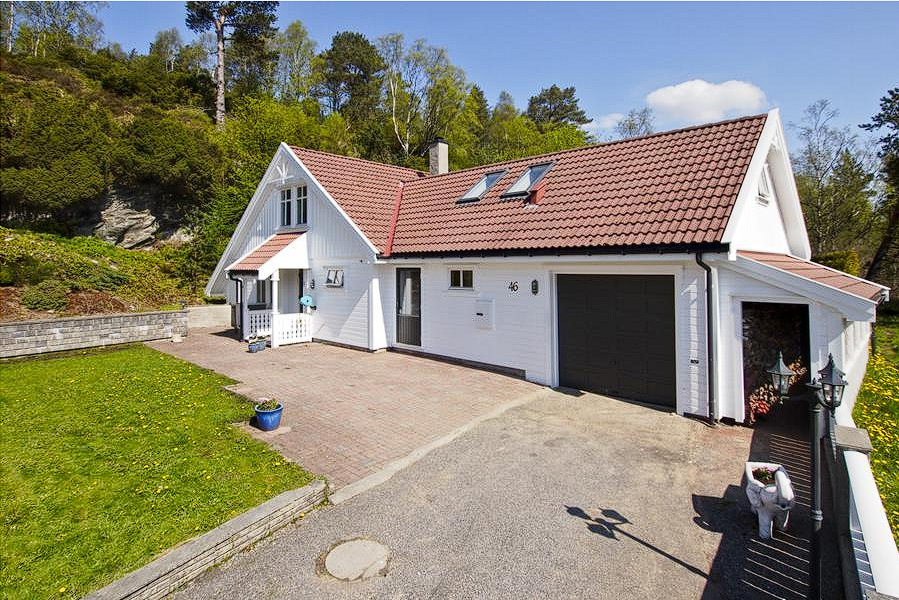

Enebolig på Fana
Bilder av boligen

Boliginformasjon
Pris: 5 000 000 kr
Størrelse: 150 m²
Antall soverom: 3
Område: Fana, Bergen
Historien om boligen
Denne eneboligen ligger i et rolig boligområde på Fana i Bergen. Boligen har i mange år vært hjemmet til en familie som har satt stor pris på nærheten til naturen og de gode mulighetene for friluftsliv.
Gjennom årene har familien gjennomført flere mindre oppgraderinger for å gjøre boligen mer praktisk og komfortabel. Huset har en romslig stue, tre soverom og gode muligheter for både familieliv og sosiale sammenkomster.
Nå ønsker familien å flytte videre, og boligen er derfor klar for nye eiere. Dette er en bolig som passer godt for dem som ønsker god plass og et rolig sted å bo, samtidig som Bergen sentrum ikke er altfor langt unna.